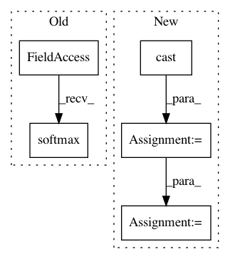

0bf56c5e8db53e152e7095087499d072018283e6,src/test.py,,model_fn,#Any#Any#Any#,132
Before Change
"label_error" : label_error,
"sequence_error" : sequence_error},
every_n_iter=100)
return tf.estimator.EstimatorSpec(mode=mode, loss=loss, predictions=tf.nn.softmax(logits),
train_op=None, prediction_hooks=[logging_hook])
def main(argv=None):
After Change
logits,sequence_length,label,length)
global_step = tf.convert_to_tensor(tf.train.get_or_create_global_step())
global_step = tf.cast(global_step, tf.float32)
sequence_error = tf.cast(sequence_error, tf.float32)
//Get the correct format to pass tp estimator spec
result = tf.convert_to_tensor([(tf.stack([global_step,
loss,
label_error,
sequence_error], axis=0))])
return tf.estimator.EstimatorSpec(mode=mode, loss=loss,
predictions=result,
train_op=None)
In pattern: SUPERPATTERN
Frequency: 3
Non-data size: 5
Instances
Project Name: weinman/cnn_lstm_ctc_ocr
Commit Name: 0bf56c5e8db53e152e7095087499d072018283e6
Time: 2018-06-29
Author: am.lamsal@gmail.com
File Name: src/test.py
Class Name:
Method Name: model_fn
Project Name: wenwei202/iss-rnns
Commit Name: b9b992e52fb42f137e6aa0de6e9f201ef0140571
Time: 2016-10-21
Author: seominjoon@gmail.com
File Name: basic/model.py
Class Name:
Method Name: bi_attention
Project Name: senarvi/theanolm
Commit Name: ee37cc5236f3a2435c02dfe13fa2d9a743aeef17
Time: 2016-09-22
Author: seppo.git@marjaniemi.com
File Name: theanolm/network/softmaxlayer.py
Class Name: SoftmaxLayer
Method Name: create_structure